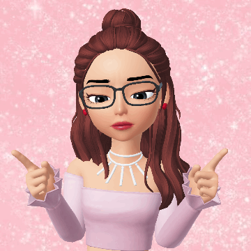

PROFECIONAL
Ingenieria de sistemas, con maestria en ciencias de datos y analitica. Exelente desempeño academico y profecion.Interesada en ayudar a organizaciones a establecer su estrategia de datos. Implementar procesos de desarrollo para utilizardatos en toma de deciciones de negocios. Experiencia en manejo de equipos,en trabajo presencial y remoto.
EDUCACION
2020-2021 UNIVERSIDAD EAFIT MEDELLIN,COLOMBIA
Maestria en Ciencias de los Datos y Analitica.
•Promedio Academico:4.8/5(preliminar).
•Descripcion de Tesis o Pasantia.
2010-2015 UNIVERSIDAD DE COLOMBIA BOGOTA,COLOMBIA
Ingenieria de Sistemas
•Promedio Academico 4.5/5.Puntaje Saber Pro 270/300
•Descripcion de Tesis o Pasantias
EXPERIENCIA
2020- CARVAJAL MEDELLIN,COLOMBIA
Gerente de Producto, Trasformacion Digital.
•Diseño de procesos desarrollo de sofware,disminuyendo en 20%,el tiempo de desarrollo.
•Manejo de 5 reportes directos,manteniendo satisfaccion de empleados por encima de 80%.
•Remplazo de 4 sistemas de datos obsoletos,ahorrando $100 millones por año.
2018-2020 COMPAÑIA NACIONAL DE CHOCOLATES BOGOTA,COLOMBIA
Ingenieria de desarrollo de sofware
•Desarrollo de aplicacion movil para servicio al cliente, aumentando satisfaccionde 3 a 4 estrellas en solo 6
meses
•Ascenso de ingenieria junior a senior en 12 meses, por resultados sobresalientes de trabajo.
2015-2017 MANPOWER BOGOTA,COLOMBIA
Ingenieriade de soporte de primera linea.
•Atender un promedio de 20 casos por dia, con satisfaccion de usuario de 90%.
•realizar 6 talleres de actualizacion de tecnologia para colegas.
CONOCIMIENTOS
•Desarrollo de sofware agil,scrum,arquitectura de sofware, modelamiento de datos,
visualizacion de datos.
•Liderazgo, manejo y desarrollo de personal, planeacion estrategica, medicion y evaluacion de resultados.
•Exel, splunk, R, Python, HTML, otros.
IDIOMAS
• Español: fluido, Ingles: fluido (nivel C1).
INTERESES
• Voluntaria realizacion de talleres sin costo sobre tecnologia para la comunidad.
• Viajar, idiomas, fotografia, diseño.
Mis Sitios